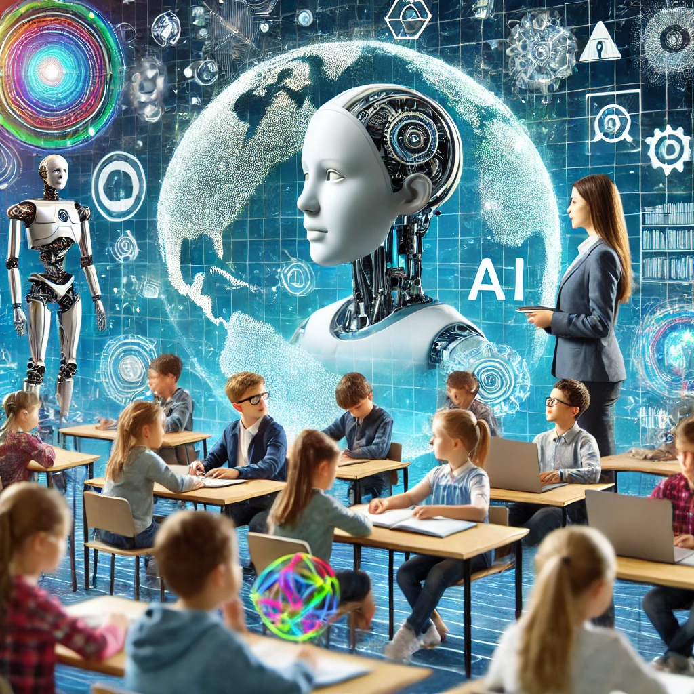

Future of Adaptive Learning
The future of adaptive learning is promising, as ongoing advancements in AI technologies continue to enhance flexibility and responsiveness. With more sophisticated algorithms, adaptive learning systems will become increasingly capable of analyzing vast amounts of data to deliver even more accurate and personalized educational experiences. These improvements are likely to expand beyond merely adjusting difficulty levels to also include insights into individual learning styles, cognitive strengths, and motivational drivers, allowing systems to cater to the unique learning needs of each student in greater depth. As a result, adaptive learning could foster a more engaging and effective educational experience for all types of learners, from those who excel to those who need extra support.

Another key area of future development is accessibility. As the technology becomes more widespread and affordable, adaptive learning systems are expected to become accessible to a larger portion of the population. Currently, high development costs limit their availability, making it difficult for underfunded schools and institutions to adopt these systems. However, as AI and data-processing technology become more affordable and efficient, the cost of implementing adaptive learning is likely to decrease, potentially making it accessible to students and schools worldwide. This could help bridge the educational divide, giving students from various socioeconomic backgrounds equal opportunities to benefit from personalized learning.
However, the integration of AI in education does raise several ethical and practical challenges. Data security is a significant concern, as adaptive learning systems gather and analyze extensive data on student behavior, preferences, and academic performance. As these systems become more intricate, ensuring that this sensitive information is stored and handled securely will be crucial to maintaining trust among students, parents, and educational institutions. Robust data protection measures, transparent privacy policies, and strict compliance with data regulations will be essential to mitigate risks associated with potential data breaches or misuse.
Furthermore, the evolving role of teachers in a technology-driven educational environment is a critical issue. While adaptive learning can support teachers by providing insights into student progress and identifying areas needing reinforcement, there are concerns that over-reliance on AI could diminish the personal interaction and mentorship teachers offer. The future of adaptive learning will need to address these concerns by finding ways to enhance, rather than replace, the teacher’s role. Ideally, adaptive systems will work alongside educators, offering them tools and insights that empower them to provide more targeted support and focus on creative and critical thinking activities that AI cannot replicate.
In summary, the future of adaptive learning holds the potential for transformative changes in education. With advancements in AI, adaptive learning systems are expected to become more accessible and effective, promoting educational equality. However, addressing ethical challenges, particularly those related to data privacy and the evolving role of teachers, will be critical to achieving a balanced and responsible integration of AI in the educational landscape.